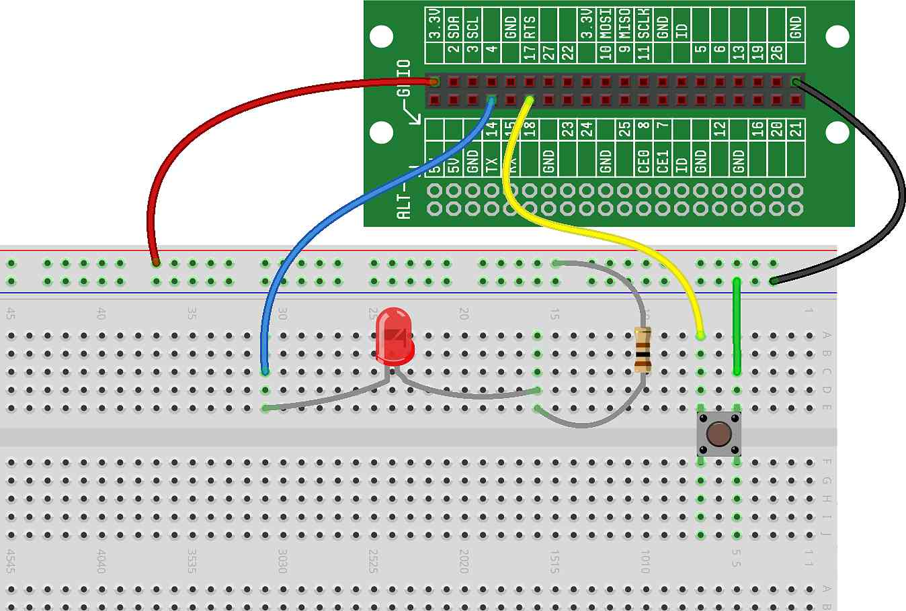

In this project, we'll expand on the code in the previous project to create a flashing flash light with multiple functions. Our new flashlight will have several mode that it rotates through on each press of the button. This is common in lots of flashlights you can buy today, and it is generally some computer code that makes it possible.
The hardware for this flashlight will be the same as the last one — two independent circuits, one for the LED and one for the button:
This program will be similar to the previous project, except we'll add some code highlighted with arrows below:
The difference here is that we are now keeping track of the state of the
button to increment a mode:
In Lines 8 through 10: we initialize variables we'll need later, including
NUM_MODES, the number of on/off modes of our flashlight.
In Line 23: At the end of each run through the loop, we save the state of the
button as was_pressed.
In Lines 12 and 13: given that we know if the button was previously pressed, we can now tell the moment a button is pressed — it occurs when the button is currently pressed, but last time through the loop it was not pressed.
In Lines 14 through 16, which occur right when the button is pressed, we
increment the mode. When it gets to the max mode, we set it
back to zero. This way, the mode will run through the sequence
(0, 1, 2, 0, 1, 2...) each time the button is pressed.
In Lines 18 through 21, we turn the light off for
mode 0. All other modes (modes 1 and 2), we turn the light off.
Give it a try. Because modes 1 and 2 both simply turn the light on, you'll have to press the button once to turn it on, and twice to turn it back off. We'll add more functionality when we improve the code in the next step. The flashlight will continue to work until you manually stop the program.
Now, let's add some functionality to modes 1 and 2. Mode 1 will work as
before (just turn the light on. Mode 2 will make the light flash. To do so,
we'll add a counter that keeps track of how many times we've gone through the
while loop:
Here, we've added code to flash the light in mode 2:
In Lines 8 and 9: we initialize variables we'll need later, including
MODE2_COUNT_TIME, which is the period of time that the light
will flash when in mode 2.
In Lines 23 and 24: for mode 1, we simply turn the light on.
button as was_pressed.
In Lines 25 though 28: for mode 2, we use a counter, mode2_count to keep track of
where we are in the flashing cycle. The counter will count from 0 up to
MODE2_COUNT_TIME, and then repeat.
In Lines 29 though 32: for mode 2, we check our counter, mode2_count — if it
is less than half way done, we turn the light on, otherwise we turn it off. This will make our
light flash 50% on and 50% off.
Give this new flashing light a try.
needed